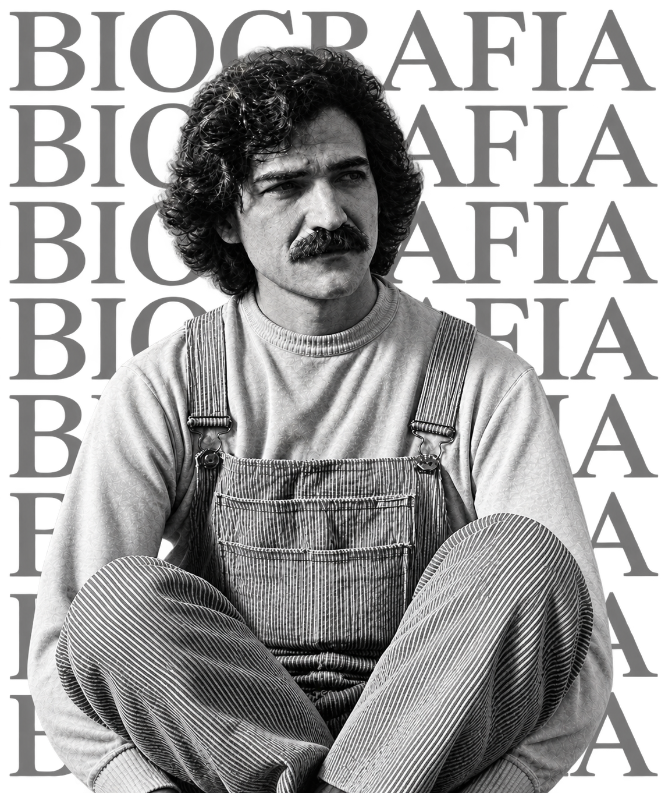

Belchior
Apenas
um rapaz
latino-americano.
1946 - 2017
BELCHIOR
1946 - 2017
Antônio Carlos Gomes Belchior Fontenelle Fernandes, imortalizado apenas como Belchior, foi um cantor, compositor e filósofo de botequim nascido em 26 de outubro de 1946, em Sobral, Ceará. Quase virou frade capuchinho e chegou a largar a faculdade de Medicina na reta final para se jogar de cabeça na música, despontando com o histórico grupo "Pessoal do Ceará". O estouro nacional veio com força em 1976 no clássico álbum Alucinação, uma verdadeira pedrada poética recheada de hinos como "Apenas um Rapaz Latino-Americano", "Como Nossos Pais" (eternizada na voz de Elis Regina) e "Velha Roupa Colorida". Dono de um bigode inconfundível, voz cortante e canetas afiadas que retratavam as angústias da juventude e a vida na metrópole, Belchior marcou a MPB misturando folk, rock e poesia existencial. Anos depois, ainda coroou sua lenda ao simplesmente "desaparecer" da vida pública, deixando um legado visceral que segue arrebatando gerações com sua autenticidade e rebeldia pura.

Alucinação é o álbum que
consolidou Belchior como um
dos maiores nomes da MPB
Palavras que continuam ecoando
Minha alucinação é suportar o dia a dia, e o meu delírio é a experiência com coisas reais.
"No presente a mente, o corpo é diferente. E o passado é uma roupa que não nos serve mais.
"Amar e mudar as coisas me interessa mais."
"A noite fria me ensinou a amar mais o meu dia, e pela dor eu descobri o poder da alegria."
"Meu bem, talvez você possa compreender a minha solidão, o meu som e a minha fúria e essa pressa de viver."
"O passado é uma roupa que não nos serve mais."